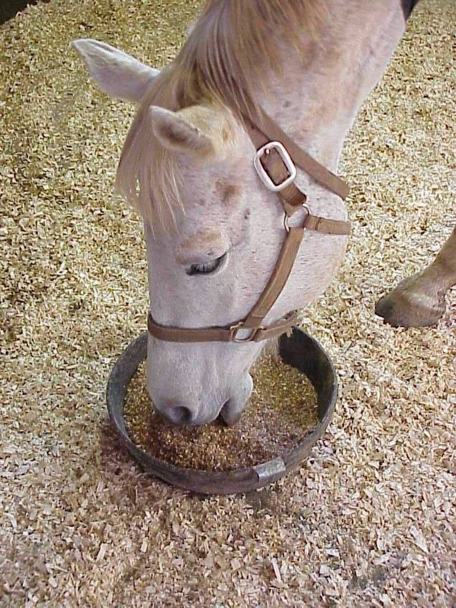
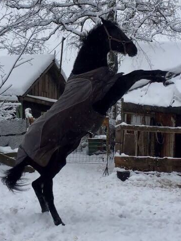

Уход за лошадьми

Мы обращаем внимание на кормление и питание.
В нашем клубе используются только высококачественные корма, которые подобраны индивидуально для каждого животного,
учитывая его возраст, вес, особенности здоровья и нагрузки.
Лошади получежуают свежую траву, разнообразные овощи и фрукты, гранулы и сено, а также лучший корм для лошадей - Анилин.

Также, важной составляющей ухода за лошадьми является физическая нагрузка.
В конном клубе Хлебниково организован тренажерный зал для лошадей, где они могут выполнять специальные упражнения для поддержания мышечного тонуса и развития ловкости.
Также, на лошадей регулярно садятся наездники для участия в конных тренировках и соревнованиях.